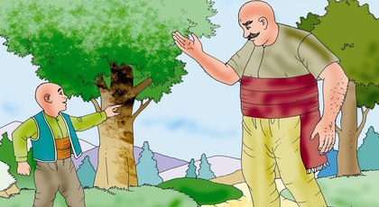

Keloğlan ile Devler

Bir varmış bir yokmuş, evvel zaman içinde, kalbur saman içinde, yaşlı bir nine ile oğlu varmış. Kafası kel olduğundan, herkes o oğlana Keloğlan dermiş.
Keloğlan, keyfine çok düşkünmüş, sabah erkenden kalkar, akşamlara kadar sinek avlar, fare kovalar, daha güneş batar batmaz, uyuz kediler gibi ocak başına büzülürmüş. İş, güç ne yaparmış, ne de severmiş. Yaşlı annesi, oğlunun bu miskin, bu tembel huyundan çok dertliymiş. Birçok kereler, yahut sayısız defalar uyarmış, ama Keloğlan hiç aldırış etmemiş, sineklere avlamaya, tavuklara kışalamaya, dev gibi fareleri de kovalamaya devam etmiş.
O kadar tembellik ediyormuş ki, keçileri ile eşeği bile yaylıma götürmemiş, hayvancıklar açlıktan ölmüş. Yaşlı annesi, artık daha fazla dayanamamış, oğlum, uşağım dememiş, almış eline kocaman bir sopa düşmüş peşine. Neresine gelirse pat pat vurmuş. Neredeyse, Keloğlan’ın kafası kırılmış.
Keloğlan bakmış ki anasının dayaktan vazgeçeceği yok, acımadan öldürecek, canlı canlı da mezara gömecek. Ardına bile dönüp bakmadan kaçıp gitmiş. Çok para kazanmadan eve dönmeyecekmiş.
Az gitmiş, uz gitmiş, gide gide bir kasabaya inmiş. Karnı da çok ama çok acıkmış. Parası da ya azmış yahut hiç yokmuş. Bir kocakarının evine varmış, kapısını vurmuş, ekmek istemiş, yemiş…
İş aramış, bulamamış, bir güzel de paylanmış. Geri dönmemeye pek kararlıymış ya, ne olur ne olmaz, dağlarda, ormanlarda lazım olur diye düşünmüş. Bir demirci dükkanına varıp, kendine demir bir kılıç yaptırmış. Takmamış beline, almış eline. O kadar çok yol gitmiş ki, kaç köy, kaç kasaba geçtiğini unutmuş. Çok sessiz ve karanlık bir gecede, bir derin vadiye inmiş. Eli kınılıcında gözü sesteymiş.
Bir gürültü ile irkilmiş. Kulak kabartmış, çok korkmuş. Bu sesleri daha önce hiç duymamış. İnmiş daha da aşağılara,gördüğü manzara, az kalsın aklını başından alacakmış. Birçok dev, bir arabadaymış. Durmadan konuşuyorlarmış. Meğer devler düğün yemeği pişirirmiş. Kocaman kocaman ocakları varmış. Ev büyüklüğündeki kazanların biri indirilip biri bindiriliyormuş. O kadar meraklanmış ki Keloğlan, daha yakından görmek için birkaç adım yürümüş. Her nasılsa devin birisi kendisini görmüş. Demir kılıç yaptırdığına çok sevinmiş. Ama bu kadar dev ile nasıl baş edeceğini düşündükçe, üzülmüş, korkmuş. Korkmakla olmuyormuş, yiğitliği tutmuş.
Kendisine bakınıp duran dev, çok neşeli bir kahkaha patlatmış, bütün dağları dalgalandırmış. Arkadaşlarına dönmüş, şöyle seslenmiş,
“Bulduk, bulduk.”
Bir dev, “Ne buldun” diye sormuş.
Keloğlanı gören dev, ağzından salyalar akıta akıta, “Bir insan” demiş, “bir insan.”
Başka bir dev, pek iştahlı imiş. “Çoktandır insan eti yememiştik.” Ayağımıza kadar geldi.
Hep birlikte bir “hey” çekmişler, Keloğlanı yemeğe karar vermişler.
Keloğlan, bakmış ki durum ciddi. Kaçsa nereye kaçacak? Dövüşmeye kalkışsa beceremeyecek. “Şunları hele bir korkutayım” diye düşünmüş ve gayet sert bir sesle haykırmış:
“Yüreğiniz varsa topunuz birden gelin!”
Devler, yedi dağı titreten bir kahkaha atmış. “Acaba şu zavallı çocuk neyine güveniyor” diyen bir dev, Keloğlan’ın yanına çıkmış, demir kılıcı görünce irkilmiş, arkadaşlarına seslenmiş: “Hey dikkatli olun, Miron Padişahı’nın büyülü kılıcına benzeyen bir kılıcı var.”
Bu sözler üzerine Keloğlan bayağı sevinmiş, hem de yalancı pehlivanlar gibi şov yapmaya, el kol sallamaya başlamış. Bir şeyler daha söylemiş: “Benden hatırlatması devler, acırım size, yazık olur hepinize.” Devlerden biri biraz alaycı bir dille, “Çok kabadayılık yapıyorsun yavru insan. Eni konu bir kılıcın var” demiş.
Keloğlan kılıcını havaya kaldırıp konuşmuş: “Şimdi kılıcımı iki kez sallarsam, hepiniz ölürsünüz. Çünkü zehir saçar.” Çok korkmuş devler. Birkaç adım geri çekilmişler. Birkaç tanesi kaçıp gitmiş, birkaç tanesi korkusundan yerlere yığılmış. Bakmış ki söylediği her söz devler üzerinde büyük etkiler yapıyor, şöyle demiş Keloğlan:
“Korkmayın, korkmayın! Eğer dediğimi yaparsanız kılıcımı sallamam.”
Bir dev, “Emriniz olur keloğlan. Hemen söyle ne istediğini. Yapmaya hazırız. Bize dokunma yeter ki. Ne olursun, yiğit delikanlı! O kadar çok şişinmiş ki Keloğlan, aç karnını bastıra bastıra emir vermiş devlere:
“En güzel yemeklerinizden bana güzel bir sofra hazırlayın bakalım. Hadi, durmayın daha öyle karşımda pısırık pısırık. Sallarsam kılıcı, sonunuz olur çok acı.”
Sevinmiş devler, bir de takla atmışlar kocaman kocaman gövdeleriyle. Titrek titrek konuşmuşlar. “Aman Keloğlan, kılıcı zehirli yiğit oğlan, dokunma bize, hemen sofranı hazırlıyoruz” demişler. Göz açıp yummaya kalmadan mükellef bir sofra kurulmuş. Karnı çok aç olan keloğlan, sofradaki yemeklerin tümünü yemiş. Biraz da yanına almış öteberilerden. Kalkmış yoluna giderken devlerden biri şöyle demiş: “Ey yiğit, seninle bir pazarlık yapalım mı?”
“Ne pazarlığı” diye sormuş Keloğlan.
“Şu kılıcını bize satar mısın” demiş dev.
Keloğlan ağırdan almış, işi iyice kıymete bindirmiş. “Hoppala… Oldu mu ya şimdi? Siz taşıyamazsınız ki onu.”
“Niçin taşıyamayız ki kılıcı? Biz çok güçlüyüz” diyen bir deve şu karşılığı vermiş:
“Üstelik o kadar pahalıdır ki bu, paranız yetmez.”
Yaşlı dev, “İki küp altına ne dersin Keloğlan” diye sormuş.
Bu öneri çok hoşuna gitmiş Keloğlan’ın. “Nerede altınlar” diye sormuş.
Çok memnun kalan yaşlı dev:
“Biraz ötede, Çengir Vadisi’nin düzlük yerinde” diye tarif etmiş, bir yakut sandık var. Altınlar o sandığın içinde. Bize yasak oralara yaklaşmak. Ama senin için bir sakıncası yok. Git ve al!”
Buna aklı yatmış Keloğlan’ın, şöyle karşılık vermiş:
“Kılıcın ağırlığını azalttım. Özel bir duası var, onu okudum. Fakat zehir saçmasını engellemedim. Kılıcı şuraya bırakıyorum. Ben buradan tamamen uzaklaşıncaya kadar sakın dokunmayın. Çünkü, kokumu alır almaz zehir kusar,benden hatırlatması.”
Devler korkuyla karışık bir duyguyla, “Hay hay emriniz olur Keloğlan, hele yürü git sen” demişler. Kılıcı yere bırakan Keloğlan el sallayarak çekip gitmiş. Çengir Vadisi’ne varan Keloğlan, yakut sandığı bulmuş. Hemen omzuna alıp yola girmiş. Keyfinden de türkü söylermiş. Biz bakalım devlerin haline.
Bir zaman sonra, kılıcı yerden almışlar, bir de bakmışlar ki ne zehir saçıyor ne de kesiyor. Kandırıldıklarını anlayan devler, bunu hazmedememiş. Bir insan yavrusunun oyununa gelmenin hırsıyla çileden çıkmışlar. Aralarından üç deve görev vermişler. Tutup Keloğlanı getirmelerini istemişler. Büyük bir intikam duygusu ile Keloğlan’ın peşine düşen devler, gitmiş, gitmiş, ama onu bulamamışlar. Yine devam etmişler, ama biri uçurumdan yuvarlanmış, biri yorgunluktan düşüp ölmüş. Üçüncüsü ise tek başına aramayı sürdürmüş.
Keloğlan hâlâ gidermiş. Islığını da hiç kesmezmiş. Bir ormanlıktan geçerken, bir tilki ile karşılaşmışlar. İkisi de birbirini çok sevmiş. Selamlaşmış, oturup iki laf etmişler. Tam bu sırada oturdukları yer titremeye başlamış.
“Eyvah” demiş tilki “neler oluyor?”
Hemen, durumu anlamış Keloğlan:
“Korkacak bir şey yok, bir dev bize doğru geliyor.”
Fakat böyle derken tilkiye güvenirmiş Keloğlan. Yoksa korkudan az kalsın düşüp bayılacakmış. Yer sarsılmaya, havada toz bulutları belirmeye, ağaçlar da sallanmaya başlamış. Dev giderek yaklaşıyormuş. Keloğlan’ın yüzü gözü sararmış. Tilki, acımış arkadaşına. Biraz önce, erkeklik havaları atmasına zaten inanmamışmış. Moral vermek istemiş:
“Buraların kıralı benim Keloğlan, dev tek başına değil ordusuyla gelse para etmez.”
Keloğlan sevinç içinde ellerini çırpmış, tilkiyi kulaklarından tutup sevmiş. Tilki hesapsız yardım eder mi? Devin sıcak nefesi alev alev yüzlerini yalamaya başlamış ama, hâlâ tilkide bir hareket yokmuş.
Keloğlan titremeye başlamış. “Etme tilki kardeş” demiş, “kurbanın olayım, kurtar beni şu devin elinden.”
“Ben seni kurtaracağım ama, sen de bana bir konuda yardımcı olacaksın. Anlaştık, değil mi” demiş tilki. Hiçbir şey düşünemiyormuş Keloğlan.
“O iş o kolay, hadi artık ne yapacaksan yap” diye yalvarmış.
Tilki, havalara bakmış, etrafı dikizlemiş ve öyle bir ulumuş ki yer gök inlemiş. Bir anda yüzlerce tilki etrafına toplanmış. Bu kadar tilkiyi birarada gören dev, korkusundan olduğu yere yıkılıp ölmüş. Tilki, yeniden ulumuş, yüzlerce tilki kaybolmuş.
Keloğlanı bir düşünce almış, “acaba tilki yakut sandığı ister miymiş?” Tilki sitem etmiş, “Hâlâ ne istediğimi sormayacak mısın Keloğlan kardeş?”
Mahçup olan Keloğlan kuşkulu kuşkulu karşılık vermiş, “Sıkıntıdan hep unuttum, buyur seni dinliyorum.”
Tilki anlatmış meramını:
“Şu ileride bir ev var. Bu evin avlusunda öyle güzel bir tavuk gördüm ki hâlâ unutamıyorum. Bembeyaz başı, altın gibi tüyleri var. Parıl parıl parlıyor. Kırmızı gagalarıyla rüyalarıma giriyor. Kaç defadır denedim, yakalayamadım. Kırk günden beri ortalıkta göremiyorum. Ne yap yap,bu tavuğu bana getir!”
Tilkinin isteğinin yakut sandık olmamasına çok sevinmiş Keloğlan. “İstediğin buysa olmuş bil” demiş hemen gitmiş.
Araya sora,tavuğun sahibini bulmuş Keloğlan. Selam vermiş. Yakut sandığı yere bırakmış. Tavuğun sahibi sormuş, “Nereden gelip nereye gidersin Keloğlan?” “Uzaklardan gelip uzaklara gidiyorum” diye cevap vermiş Keloğlan.
Az sonra, çok güzel bir kızın, elindeki ayran tası ile geldiğini görmüş. Çarpılmış, başı dönmüş. Bakakalmış kıza. Ayranı başına dikmiş, üstüne başına dökmüş. “Hah” demiş, “Ben aradığımı bumdum, altın küpü ve şu güzel kız. Daha ne isterim ki” diye düşünmüş, tavuğu söylemeyi unutmuş. Ev sahipleri “Bu sandığın içinde ne var” diye sormuş. Keloğlan “altın var” diye yanıtlamış.
Adamın gözleri fal taşı gibi açılmış, bakışları sandıkta kalmış. Mutlaka sahip olmak istemiş. Keloğlan’ın aklı fikri kızdaymış. Tilki bekleye bekleye ağaç olmuş, sinirinden ulumuş.
Bunu işiten tavuğun sahibi “avucunu yala” diye söylenmiş. “Aaaa… vay be” demiş Keloğlan.
“Ne var” diye sormuş adam. “Ne öyle ay, vay deyip durdun?”
“Bir ses duydum” demiş Keloğlan, “tilki sesiydi galiba.”
Asıl niyetini gizlemiş.
Adamın sesi sertleşmiş: “Bıktım usandım bu pis düşmandan. Akşam sabah vurmak için bekliyorum, bir türlü denk getiremiyorum…”
“Tavuğun, horozun çok mu” demiş keloğlan.
“Hiçbiri umurumda değil” diye konuşmuş adam, yalnız beyaz başlı, kırmızı gagalı, altın tüylü bir tavuğum var ki. Tilkinin yüzünden kümeste ölecek. Görsen hele bir Keloğlan, dünyada bu kadar güzel tavuk yoktur.”
“Sat bana” diyen Keloğlan’a şöyle demiş adam:
“Olur ama pazarlıksız yumurta bile satılmaz.”
Keloğlan, “ne istersin” demiş. Adam “sandıkla değişelim” demiş.
Keloğlan, “Çocuk mu kandırıyorsun? Hiçbir sandık altın bir tavuğa verilir mi be adam?”
Adam, “Sen özelliklerini biliyor musun tavuğumun? Ezbere konuşma” demiş.
Meraklanmış Keloğlan: “Sahi mi, ne özellikleri varmış tavuğunuzun?”
“Çok güzel gıdaklar” diye cevap vermiş adam.
“Bir kahkaha atmış Keloğlan. “Gıdaklamayan tavuk mu olur?”
Adam, “İyi ama benimki güzel gıdaklama yarışmalarında hep birinci gelir, çok para kazandım…”
“Bak sen sahiden pek hünerliymiş. Bir gıdaklasın da göreyim” demiş Keloğlan.
Adam başını sallamış: “Şimdi olmaz.”
Keloğlan, “Neden olmazmış” demiş. Adam, “tilki pusuda bekliyor, duymadın mı” diye yanıtlamış.
“Doğru, peki zaten kümesten çıkaramıyorsun, sat gitsin baha uygun bir fiyata” diye yeniden üstelemiş Keloğlan.
Adam bu fikre bayılmış, “öyle ya” demiş içinden “kümeste ölüp gidecek.” Çetin bir pazarlık yapmışlar. İki kese altına anlaşmışlar. Tavukla birlikte sandığını da alıp yola koyulan Keloğlan, gidip tilkiyi bulmuş, tavuğu teslim etmiş. Çok teşekkür eden tilki, sevinçli sevinçli ormanlara doğru giderken Keloğlan da yakut sandığı omzunda köyün yolunu tutmuş.
Keloğlan’ın bir sandık dolusu altınla geldiğini gören yaşlı anası, çok memnun olmuş, kucaklayıp bağrına basmış. Bir sürü de dualar etmiş. Keloğlan sandığı eve bırakmış. Anasına demiş ki, “Ne istersin ana, söyle de ineyim pazara.”
Birkaç yiyecek almasını söylemiş anası Keloğlan’a. O da inmiş pazara. Doldurmuş çuvalları erzakla yüklemiş eşeğine. Bütün köylüler şaşırmış bu işe. Artık herkes kızını vermek için sıraya girmiş. Anası da çok sevinmiş ama Keloğlan, “Beni dün fakirken hor görenlerin kızını almayacağım ana, benim gönlüm, kırmızı gagalı, beyaz başlı, altın tüylü tavuğun sahibinin kızında tez hemen istemeye git.”
Anası, giyinmiş, kuşanmış, araya sora kızın babasını bulmuş. “Keloğlan’ın anasıyım, kızını istemeye geldim” demiş. Adam kızının böyle zengin birisi tarafından istenmesine öyle sevinmiş ki, hiç naz etmemiş, vermiş.” Hemen süslemiş, allamış pullamış, katmış kızını yaşlı kadının yanına.
Bütün köyde herkese parmak ısırtan bir düğünle dünya evine girmiş Keloğlan. Çok mutlu bir ömür sürmüş karısı ve anasıyla.